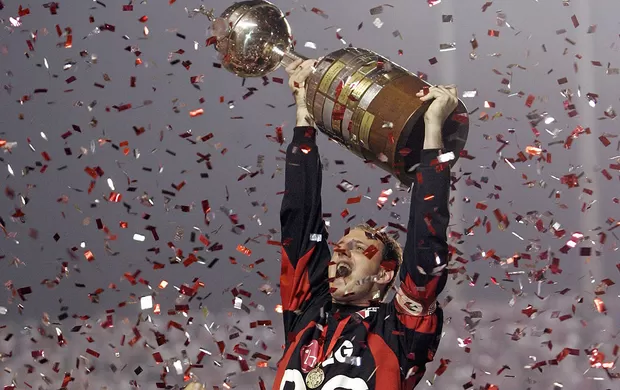

Em 2005, o São Paulo Futebol Clube viveu um dos anos mais vitoriosos de sua história. Sob o comando do técnico Paulo Autuori, que assumiu a equipe no decorrer da temporada após a saída de Emerson Leão, o time conquistou três títulos importantes: o Campeonato Paulista, a Copa Libertadores da América e o Mundial de Clubes da FIFA. O ano marcou o retorno do clube ao protagonismo internacional e consolidou ídolos como Rogério Ceni.
No Campeonato Paulista, o São Paulo teve uma campanha sólida e conquistou o título com uma rodada de antecedência. A equipe teve boas atuações ofensivas e defensivas, sendo Luizão um dos principais destaques no ataque. O título foi confirmado após uma vitória por 2 a 1 sobre o Santos no Morumbi.
Na Copa Libertadores da América, o São Paulo começou a campanha sob o comando de Emerson Leão, mas foi com Paulo Autuori que alcançou a conquista. Após se classificar em primeiro lugar na fase de grupos, o time passou pelo Palmeiras nas quartas de final, pelo River Plate na semifinal e enfrentou o Atlético Paranaense na final. No primeiro jogo, fora de casa, houve empate por 1 a 1. Na partida de volta, no Morumbi, o São Paulo goleou por 4 a 0, conquistando seu terceiro título continental, após os títulos de 1992 e 1993. Rogério Ceni foi umdos destaques da campanha, sendo inclusive artilheiro do time na competição com cinco gols, um feito raro para um goleiro.
No Mundial de Clubes da FIFA, disputado no Japão em dezembro, o São Paulo enfrentou o Al-Ittihad, da Arábia Saudita, na semifinal, vencendo por 3 a 2. Na final, o adversário foi o Liverpool, da Inglaterra. Em uma partida histórica, o São Paulo venceu por 1 a 0 com gol de Mineiro. Rogério Ceni teve uma atuação espetacular, sendo eleito o melhor jogador da final e do torneio. Com isso, o São Paulo se sagrou tricampeão mundial, repetindo os feitos de 1992 e 1993.
No Campeonato Brasileiro, o clube não teve o mesmo desempenho. Devido ao desgaste físico e ao foco nas competições internacionais, o São Paulo terminou apenas na 11ª colocação. O campeonato foi marcado por polêmicas envolvendo arbitragem e a chamada “Máfia do Apito”, que resultou na anulação de várias partidas e modificações na tabela.
O elenco de 2005 contava com nomes que marcaram época. Rogério Ceni foi o líder e símbolo do time, sendo decisivo em diversas partidas com defesas importantes e gols. A defesa era composta por jogadores como Lugano, Fabão e Edcarlos, enquanto Cicinho e Júnior atuavam nas laterais. No meio-campo, os volantes Mineiro e Josué garantiam equilíbrio, e Danilo organizava o setor ofensivo. No ataque, Amoroso, Luizão e Grafite foram fundamentais nas conquistas.
O ano de 2005 consolidou o São Paulo como o clube brasileiro com maior número de conquistas internacionais até então. O time foi eleito pela IFFHS como o melhor do mundo naquele ano. As conquistas reforçaram o status do clube no cenário internacional e eternizaram a equipe de 2005 como uma das maiores da história do futebol brasileiro.
Elenco:
O São Paulo de 2005 teve um elenco histórico liderado por Rogério Ceni, com defesas decisivas e gols importantes. A defesa sólida com Lugano e Fabão, o meio com Josué e Mineiro, e o ataque com Amoroso e Grafite formaram um time equilibrado.
Foi o ano das conquistas do Paulista, da Libertadores e do Mundial. Um time que entrou para a história com raça, técnica e identidade.

Rogério Ceni: um dos maiores heróis da história do clubeElenco da temporada de 2005
Em 2005, o uniforme titular do São Paulo era branco, com faixa tricolor no peito, escudo centralizado com cinco estrelas e patrocínio da LG. O reserva tinha listras verticais vermelhas, pretas e brancas, gola preta em V e escudo no lado esquerdo. O terceiro uniforme era preto, com
a mesma faixa tricolor e detalhes do modelo de goleiro, usado por Rogério Ceni nas finais e também como uniforme alternativo em alguns jogos.